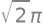

Introducción a SymPy#
`SymPy es una librería para Python de matemática simbólica. Para poder usarlo necesitamos importar el paquete SymPy.
import sympy as sp
Para imprimir las fórmulas por pantalla y obtener una visualización tipográfica agradable, además es necesario ejecutar:
sp.init_printing()
Tenga en cuenta que esto puede cambiar según cual sea de la versión de sympy
Luego, ya para comenzar con la operatorio simbólica, necesitamos crear un símbolo.
x = sp.Symbol('x')
x
SymPy nos permite hacer muchas operaciones matemáticas que serían tediosas a
mano. Por ejemplo, podemos expandir un polinomio:
polynomial = (2*x + 3)**4
polynomial.expand()
Observe lo que sucedió: definimos un nuevo nombre llamado polynomial
y luego usamos el método .expand() para expandir el polinomio. Podemos ver
todos los métodos asociados con un objeto escribiendo su nombre y un punto y
luego presionando «tabulador».
Acceda a la lista de métodos para la variable polynomial ingresando «.» y presionando tabulador al final de la línea en la celda a continuación.
Para obtener ayuda sobre cualquier método, podemos escribir su nombre y
agregar un ? al final, luego evaluar la celda.
Obtenga ayuda sobre el método .expand() mediante la evaluación de la celda
a continuación:
polynomial.expand?
También es posible obtener ayuda para una función colocando el cursor entre los paréntesis y presionando Mayúscula + Tabulador
Por supuesto, también podemos factorizar polinomios:
(x**2 + 2*x + 1).factor()
Cálculo#
SymPy sabe integrar y diferenciar.
polynomial.diff(x) # First derivative
polynomial.diff(x, 2) # Second derivative
# indefinite integral - note no constant of integration is added
polynomial.integrate(x)
# Note that integrate takes one argument which is a tuple for the definite
# integral
polynomial.integrate((x, 1, 2))
Límites#
Podemos evaluar los límites usando SymPy, incluso para límites «interesantes»
donde necesitaríamos la regla de L’Hopital
sp.limit((2*sp.sin(x) - sp.sin(2*x))/(x - sp.sin(x)), x, 0)
Aproximación#
SymPy tiene soporte incorporado para la expansión de series de Taylor
nonlinear_expression = sp.sin(x)
# taylor expansion in terms of the x variable, around x=2, first order.
sp.series(nonlinear_expression, x, 2, 2)
Para eliminar el término de perdida use .removeO()
temp = sp.series(nonlinear_expression, x, 2, 2)
temp.removeO()
También notará que el comportamiento predeterminado de SymPy es retener
representaciones exactas de ciertos números:
number = sp.sqrt(2)*sp.pi
number

Para convertir las representaciones exactas de arriba en representaciones aproximadas de punto flotante, use uno de estos métodos:
sympy.Nfunciona con expresiones complicadas que también contienen variables.floatdevolverá un número de tipofloatde Python normal y es útil cuando se interactúa con programas que no son deSymPy.
sp.N(number*x)
float(number)
Resolver ecuaciones#
SymPy puede ayudarnos a resolver y manipular ecuaciones utilizando la
función solve. Como muchas funciones de resolución, encuentra ceros de una
función, por lo que tenemos que reescribir las ecuaciones de igualdad para
que sean iguales a cero,
solutions = sp.solve(2*x**2 + 2 - 4)
solutions
solutions[0]
También podemos usar sp.Eq para construir ecuaciones
equation = sp.Eq(2*x**2 + 2, 4)
equation
La función roots nos dará también la multiplicidad de las raíces.
sol = sp.roots(equation)
sol
Esto no dice que la ecuación anterior tiene una solución -1 y otra solución igual 1.
También podemos resolver sistemas de ecuaciones pasando una lista de ecuaciones para resolver y pidiendo una lista de variables para resolver.
x, y = sp.symbols('x, y')
sp.solve([x + y - 2,
x - y - 0], [y, x])
Esto incluso funciona con variables simbólicas en las ecuaciones.
a, b, c = sp.var('a, b, c')
solution = sp.solve([a*x + b*y - 2,
a*x - b*y - c], [x, y])
solution
solution.items()
dict_items([(x, (c + 2)/(2*a)), (y, (2 - c)/(2*b))])
a = [i for i in solution.values()]
a[0]
a[1]